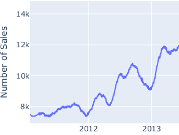
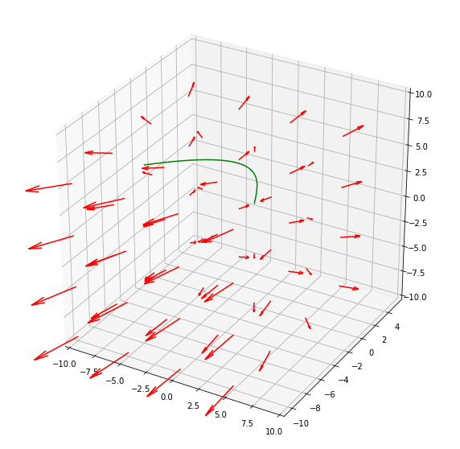

 Time Series Forecasting in Pytorch Time series forecasting is a classical problem in which you predict the values in the next timesteps, given historical data. The M5 Forecasting competition on Kaggle is an excellent dataset for time series 21 Apr 2020
 Visualizing Vector Fields and Flow Lines using Matplotlib Using Matplotlib, a python plotting library, I figured out how to graph both 2d and 3d vector fields along with their associated flow lines. Intuitively, flow lines are curves which you get by 31 Mar 2020
Deep Reinforcement Learning [1/4]- Deep Q Learning Welcome to my first post in a series on deep reinforcement learning in Pytorch. Reinforcement learning is a branch of machine learning dealing with agents and how they make decisions in an environment. 01 Mar 2020
GPU Monitor IntelliJ Plugin I made an IntelliJ plugin that monitors GPU vitals that's compatible with PyCharm (my IDE of preference), IntelliJ IDEA, and others. 04 Jan 2020
Transformer [2/2]- PytorchTransformers Library In part 2 of my post, I'm going to go over huggingface's pytorch transformers library. 25 Nov 2019
Transformer [1/2]- Pytorch's nn.Transformer In part 1 of my series on transformers, I'm going to go over implementing a neural machine translation model using Pytorch's new nn.Transformer module. 10 Nov 2019
College Tuition Prediction [2/2]- Model In part 2, we're building the model to predict college tuition. 19 Aug 2019
College Tuition Prediction [1/2]- Data Preparation Welcome to part 1 to a series of posts regarding my college tuition project, where I first prepare and visualize the data. 18 Aug 2019
![Transformer [1/2]- Pytorch's nn.Transformer](content/images/2019/11/encoder-3-1.png)
![College Tuition Prediction [1/2]- Data Preparation](content/images/2019/08/delfi-de-la-rua-A_InfAQM_lU-unsplash-2.jpg)